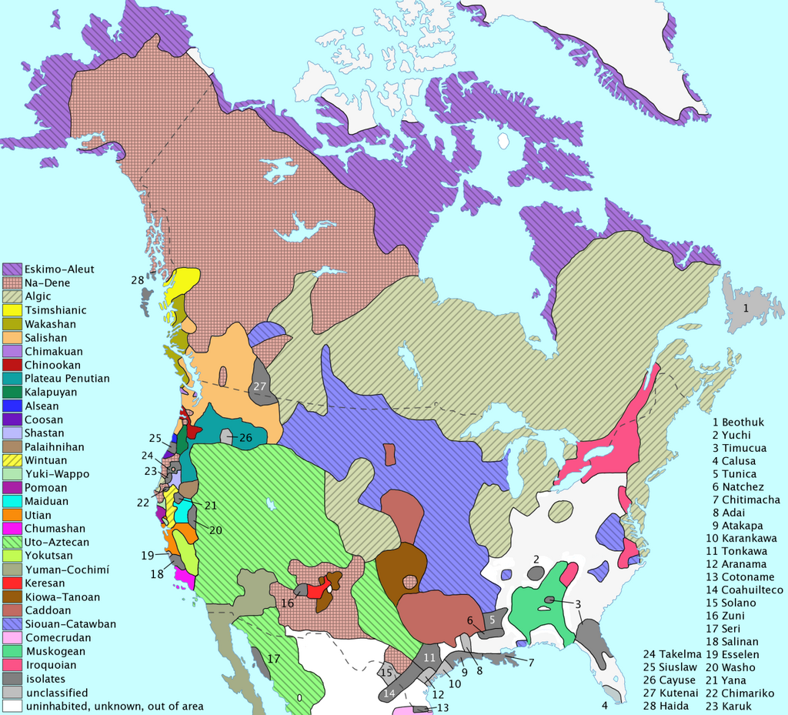

| All Flags (OFFSITE SOURCE: SOURCE IS "www.canada.ca") | Flags of Canada | Official Status |
|---|---|---|
| Click here to see all the flags of Canada! |
Canada is a commonwealth of the U.K. and (techniaclly) became it's own country on July 1 (which is now known as Canada Day), 1867, but also fully became a country on April 17, 1982. It has 13 total provinces and territores, it having 10 provinces and 3 territores. The provinces are Ontario, Quebec, Newfoundland and Labrador, P.E.I. (Prince Edward Island), Manitoba, Nova Scotia, New Brunswick, British Colombia, Alberta, Saskatchewan. Its territories are The Yukon, N.T. (The Northwest Territories), and Nunavut. The capital is Ottawa, Ontario.
Canadas Presedential System is described as a democracy with a bit of Liberalistic tendencies and practices, and also an Egalitarian, moderate political ideology. It is also a constitutional monarchy and a parliamentary democracy.
It's P.M.'s (Prime Ministers) currently Justin Trudeau, and it's other P.M. (Prime Minister)'s were Stephen Joseph Harper, Paul Edgar Philippe Martin, Joseph Jacques Jean Chrétien, A. Kim Campbell, Martin Brian Mulroney, John Napier Turner, Charles Joseph Clark, Pierre Elliot Trudeau (Justin Trudeau's father), Lester Bowles Pearson, John George Diefenbaker, Louis Steven St-Laurent, Richard Bedfort Bennett, William Lyon Mackenzie King, Arthur Meighen, Robert Laird Borden, Wilfrid Laurier, Charles Tupper, Mackenzie Bowell, John Sparrow David Thompson, John Joseph Caldwell, Abbott, Alexander Mackenzie, and John Alexander Macdonald. See source:
There are tons of Indigenous tribes in Canada, such as the Mi'kmaq, the Anishinaabe, the Blackfoot, and more (a map will be shown under this text) but when the British came over to the tribes, they wanted to teach them how to "behave like normal people". This caused them to put indigenous children into Residential Schools, where they were beaten, stripped of their original clothing, and taught to completely disregard their own languages and learn English. They also taught Christianity in the schools, taught to disregard their original religions and forced other religions on them. They also stripped them from their parents for as long as a year, and pretty much traumatized them into being what they thought was "normal". The last Residential School was shut down in the mid-late 1990's, leaving the time that residential schools existed was from 1831 - 1996.
